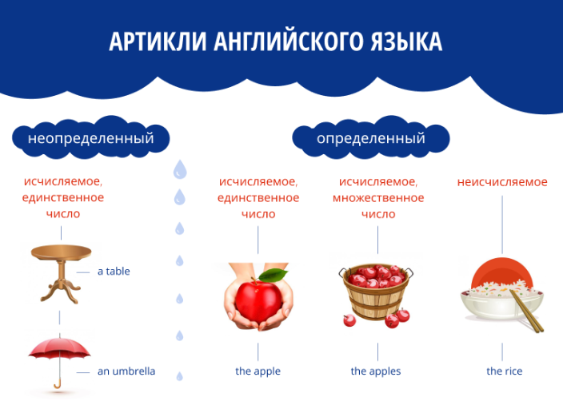
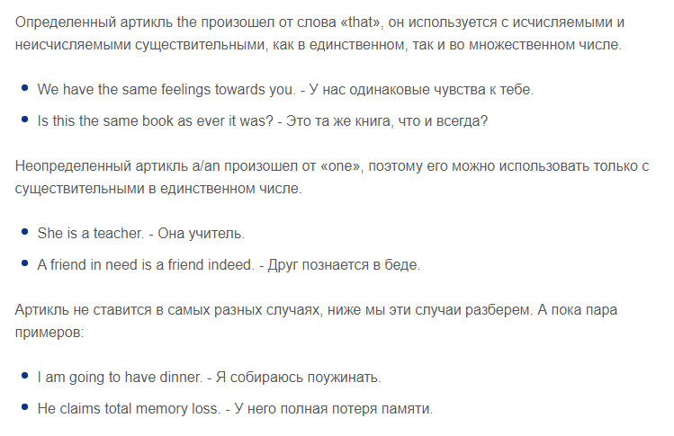
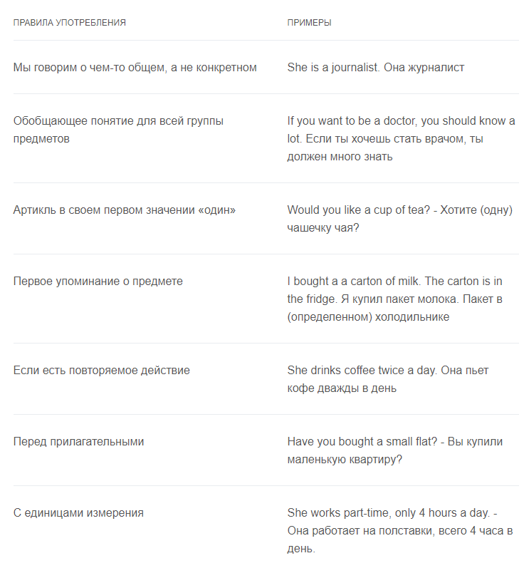
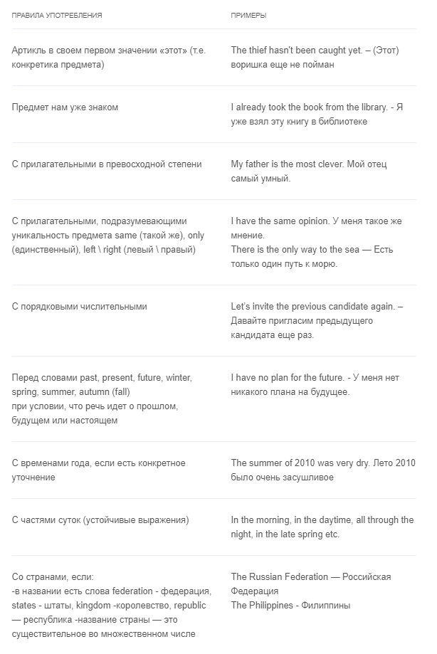
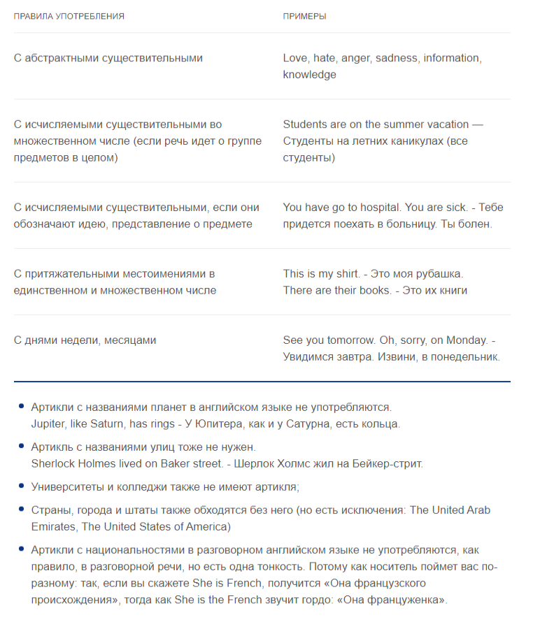
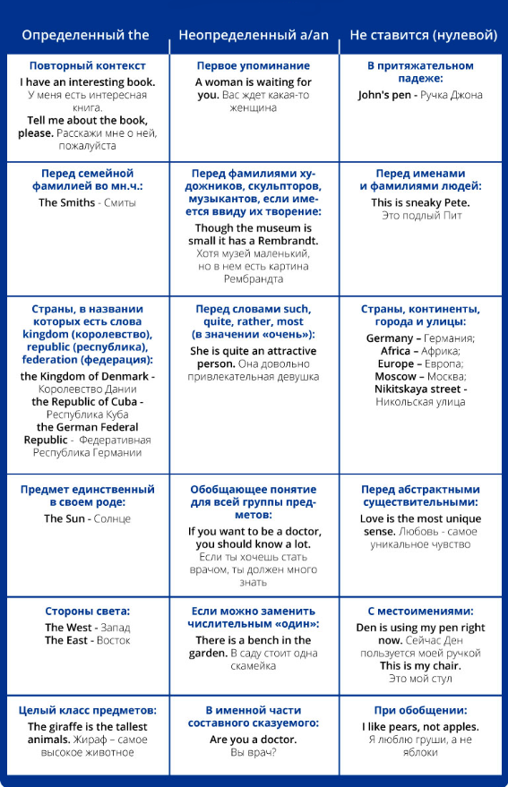

Всего их три: a, an, the. Если обратиться к лингвистике, то можно легко запомнить: определенный артикль употребляется, когда мы имеем самое ясное представление о предмете. Являясь самой примечательной головоломкой английского языка, он вызывает массу вопросов и сложностей при запоминании. В русском языке артиклей нет, поэтому нам тяжело понять, как англичане с их помощью отделяют старую информацию от новой, а также очень важную от просто важной. Также с их помощью мы узнаем, о скольких предметах мы говорим — об одном или нескольких.
Итак, когда же ставится артикль в английском языке? Он ставится перед существительным, чтобы определить контекст данного существительного в предложении.
Артикли бывают определенные и неопределенные, и выполняют ориентирующую функцию. Благодаря выбранному артиклю, мы однозначно понимаем смысл высказывания.

Артикли в английском языке: правила настолько просты?
Конечно, нет. На соответствующих форумах студенты вовсю обсуждают специфику использования артиклей и сокрушаются, как их все запомнить. В статье мы разбираем только самые основные правила, с которыми приходится чаще всего сталкиваться при изучении английского.
Основные правила для артиклей а и an:
Вот мы и назвали некоторые правила для артиклей а и an в английском языке. Важно помнить, что постановка a/an зависит от первого звука, а не буквы в слове. Так, в словах hour – час и honour – честь первые звуки являются гласными, поэтому ставим an, а в словах hooligan – хулиган и yacht – яхта первые звуки – согласные, поэтому ставим a.
Перейдем теперь к определенному артиклю.
Основные правила для артикля the:
Реки, океаны, озера и пустыни тоже употребляем с артиклем the. По этому поводу есть интересная история. Как-то раз один преподаватель английского спросил у носителя, почему он ставит артикли перед реками в английском. Артикль с озерами в английском языке как-то понятен и привычен, а вот реки… Ответ его удивил: «Можно увидеть сразу все озеро целиком… поэтому the…(подумав)…а вот река длинная, поэтому уточняем, какая именно река». В общем, с озерами и реками смело ставьте the – не ошибетесь!
Нулевой артикль в английском языке – или когда артикль не ставится
Некоторые лингвисты выделяют еще нулевой артикль, который часто употребляется там, где любой другой не нес бы никакой смысловой нагрузки. Но проще запоминать по-старинке и учить ситуации, когда не нужен артикль в английском языке. Иначе в этих артиклях можно запутаться.
Основные правила, когда артикль не ставится:
Вот, пожалуй, и все основные сведения об артиклях – маленькой, но такой важной частичке. Теперь вы даже знаете, когда артикль не употребляется в английском языке. И почему у артиклей такая долгая и славная история, как они заменили собой местоимения и числительные, а также как с помощью артиклей мы соотносим определенный речевой факт с контекстом. Хотя мнение некоторых лингвистов, что артикль — это ненужный балласт в современном языке, имеет право на жизнь, все же это служебная часть речи существует с XVI века и долго еще будет существовать.
На закуску краткая таблица артиклей в английском языке:
